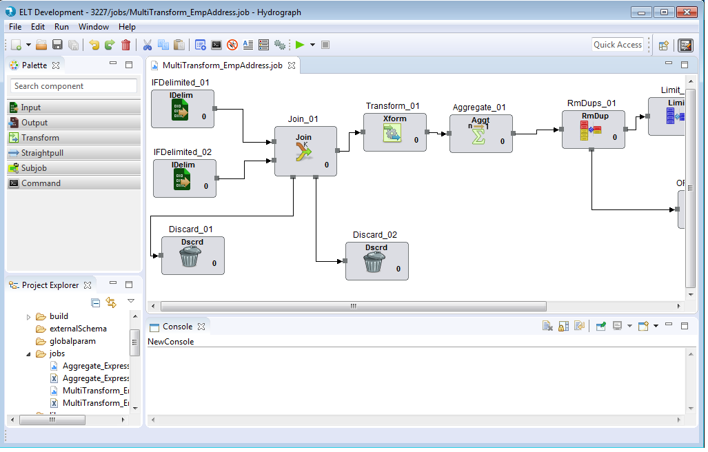

What is Hydrograph?
The Hydrograph UI product is an executable(exe) file, that helps create jobs with the help of variety of components that are provided through an interactive user interface. Users can either use the existing components in their jobs or create new custom components as per requirements.
Hydrograph provides options to save and run jobs. The jobs can be run either locally or remotely. Remote mode for run, will submit the jobs on remote Hadoop cluster.
The Hydrograph UI communicates with the underlying Hydrograph engine to fetch execution results and job progress on the job console.
